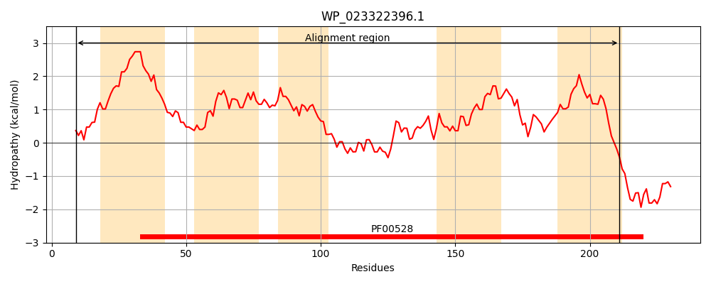
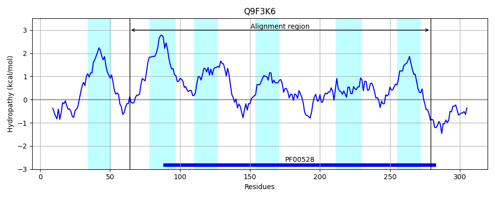
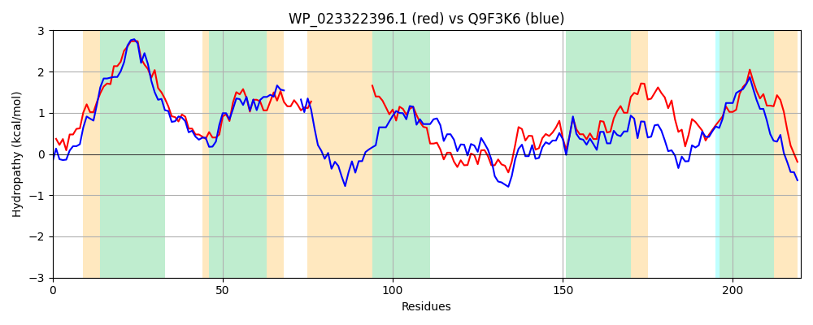

Hit Accession: Q9F3K6
Hit TCID: 3.A.1.3.24
Hit Description: gnl|BL_ORD_ID|17948 gnl|TC-DB|Q9F3K6|3.A.1.3.24 Permease OS=Streptomyces coelicolor (strain ATCC BAA-471 / A3(2) / M145) GN=SCO5259 PE=3 SV=1
Mach Len: 220
e:0.000000
Query TMS Count : 5
Hit TMS Count: 6
TMS-Overlap Score: 3.400000
Predicted Substrates:CHEBI:2642;alpha-amino acid
BLAST Alignment:
Score: 414 , Bit scores: 164 bits, E-value: 2.1e-49, Alignment length: 220, Percentage identity: 43
Query: 9 YFLSPEFIRGAWMTLLITLCSLLCGVVLGLVLALLQEAPFRAGKGLAFFYLWLFRGTPVLFQIIFVYNVLPGFGLRF-----------------SAFTCAVLALSLNEGAYMAEILRSGLQAVKSGQRTAGMALGMTHGQIMRKIVLPQAARIVLPPMGNQMISMLKSSALVSVIAVQELLLVANQAASASFRYFEALCAAGIYYLLLTSLFMIFQSWLE 211
YF + G TLLIT+ ++L GVV G++LA+++ + +A+FY+W FRGTPVL Q++ +N+ GL F + F A+L L LNE AYMAEI R+GL AV GQ A ALGM+H + +R+IV+PQA R+++PP GN++I+MLK+++LVSV+ EL VA S E L A +YLLLTS+F + Q +LE
Sbjct: 64 YFFDDRVLTGMGKTLLITVLAMLIGVVGGILLAVMRLSKNPVTSSIAWFYIWFFRGTPVLVQLVVWFNL----GLVFEYINLGPFYRDEWSDFMTPFLTALLGLGLNEAAYMAEICRAGLLAVDEGQTEAAHALGMSHTKTLRRIVVPQAMRVIVPPTGNEVINMLKTTSLVSVVQYAELFRVAQDIGQTSGAPAEMLFLAAAWYLLLTSVFSVGQYYLE 279 | Protein Hydropathy Plots: |
|---|
|  |  |
Pairwise Alignment-Hydropathy Plot:
|
|---|
|  |